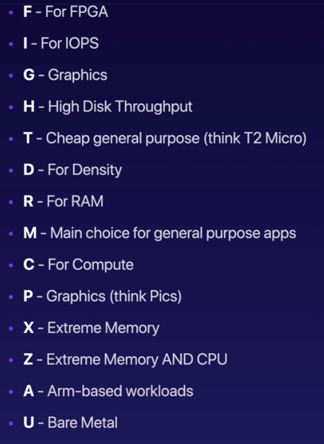
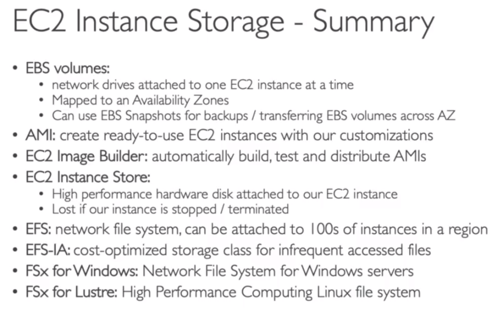
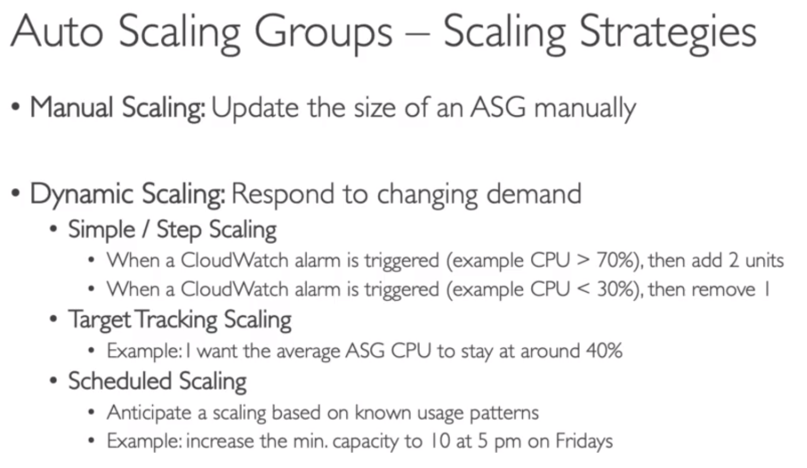
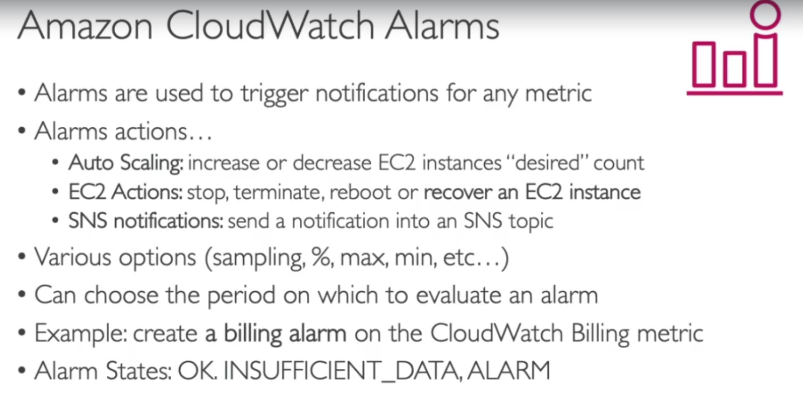

- Availability Zones are composed of one or more discrete data centers with redundant power, networking, and connectivity
- Software as a Service (SaaS) = Manage everything and provides you with a client to interact with the service
- Platform as a Service (PaaS) = Manage Applications and Data
- Pricing Model = Pay as you go
- The 3 pricing fundamentals of AWS are Compute, Storage and Data transfer out of the AWS Cloud
- AWS Compute Services: EC2, Lightsail, Lambda, Batch, Elastic Beanstalk, Serverless Application Repository, AWS Outposts, EC2 Image Builder.
- Types of Cloud Computing Deployments:
- Public CLoud - AWS, Aure, GCP
- Hybrid - Mixture of public and private
- Private Cloud (or On Premise) - you manage it in your datacenter
- Trade Capital Expense (CapEx) for variable expense: pay only when you consume resources instead of invest in data centers. No sunk cost.
- Benefit from massive economies of scale
- Stop guessing about capacity
- Increase speed and agility: develop faster and focus only in your code
- Go global in minutes
- AWS is responsible for the security OF the cloud: management of data centers, security cameras, cabling, patching RDS operating system, etc.

The policies define the permissions of the user, groups or roles
When a policy is attached to an individual user is called an inline policy
MFA
Virtual MFA Device = Google Authenticator o Authy
U2F security key = fisical USB device
How to manage AWS
AWS Console = UI accesible via web browser
AWS SDK = package that allow a programming language to communicate with AWS
AWS CLI = You need to install the AWS CLI and it allows you to do everything you can do in the web (AWS console).
AWS CloudShell = Is an AWS CLI that you can launch in the web browser (when you are logged in). You can upload an download files to your AWS PowerShell as if you are working in a machine
IAM Roles
They are used to assign permissions to AWS services in order to perform action on your behalf. A role can be used by either an IAM user in the same AWS account as the role or a user in a different AWS account. A role can also be used by a web service that AWS offers; a prime example is Amazon EC2.
Identities
They are the IAM resource objects that are used to identify and group. You can attach a policy to an IAM identity. These include users, groups, and roles.
Entities
They are the IAM resource objects that AWS uses for authentication. These include IAM users, federated users, and assumed IAM roles.
Principal
It is a person or application that uses the AWS account root user, an IAM user, or an IAM role to sign in and make requests to AWS.
Security Tools
IAM Credentials Report (account-level) = a report (excel) that lists all your account's users and the status of their various credentials
IAM Access Advisor (user-level) = shows the services permissions granted to a user an when those services were last accessed

What includes the Credentials Report

- You can comunicate with an EC2 instance via SSH with your prefered SSH client or with the option "EC2 Instance Connect" in the console (web browser).
- The minimum charge for an EC2 instance is 60 seconds
- Instance metadata: is data about your instance that you can use to configure or manage the running instance (even programatically).
- EC2 user data: instance bootstraping script
Amazon Machine Image (AMI)
docker like images to be run in EC2 instances. The AMI must be in the same region as that of the EC2 instance to be launched. If the AMI exists in a different region, you can copy that AMI to the region where you want to launch the EC2 instance. The region of AMI has no bearing on the performance of the EC2 instance.
AWS Budget
Allows you to set a limit to your bill
You can set alarms via email, based on (budget) thresholds of your current or forecasted cost
You can also set actions when the thresholds are exceeded
You can create the following types of budget:
- Creating a cost budget
- Creating a usage budget
- Creating a Savings Plans budget
- Creating a reservation budget
EC2 instance types
- General porpuse: ideal for web servers. Good balance between compute, memory and networking.
- Compute optimized: great for compute-intensive tasks that require high performance processors.
- Memory optimized: fast performance for workloads that process large data sets in memory.
Security groups
- It is (kind of) a firewall that can be attached to any EC2 instance.
- It controls how traffic is allowed into or out of our EC2 instances. Can only contain ALLOW rules.
- You can attach several security groups to an EC2 instance.
- By default a security group deny any inbound traffick and allow any outbound traffic.
EC2 Purchasing options/Launch types
- On-Demand: pay as you go
- Reserved: (up to 70% discount) you commit to use the instance for one or three years with no, partial or all upfront payment:
- Standard: you cannot change the type of instance
- Convertible: you can change the type of instance
- Scheduled: you reserved only a specific period of the day, week or month. This is not a valid response on the exam. AWS currently has this messages in its web: "You cannot purchase Scheduled Reserved Instances at this time".
- Dedicated Instance: hardware dedicated to your use but you don't have control over instance placement.
- Dedicated Host: fisical server fully dedicated to your use. You need to commit for a 3 years period. Any question that talks about special licensing requirements refers to this instance type.



- Is a network drive you can attach to your instances while they run (might be a bit of latency)
- Is a recommended storage option when you run databases on an instance
- Can be attached to only one EC2 instance at a time but one instance can have several EBS volumes attached
- Only work in one availability zone. You can create a snapshot to migrate a volume from one AC to another
- Amazon EBS Snapshots are a point in time copy of your block data. For the first snapshot of a volume, Amazon EBS saves a full copy of your data to Amazon S3. EBS Snapshots are stored incrementally, which means you are billed only for the changed blocks stored.
AMI - Amazon Machine Image
- Is the same concept of a docker image but applied to an EC2 instance.
- You can create a new AMI from an existing EC2 instance.
- EC2 Image Builder. Is a free service that help you to attach packages, roles and config other options to create a custom AMI.
EC2 Instance Store
- Is a high performance block storage attached to an EC2 instance. Is ephemeral, is deleted when the EC2 instance is terminated.
EFS - Elastic File System
- Is an elastic file system for Linux-based workloads
- Can be mounted in hundreds of EC2 instances even if they belong to multiple AZs.
- Can be directly used with on-premises systems.
- Offers high availability, scalability but at a higher cost. EC2 instances can access files on an EFS file system across many Availability Zones, Regions and VPCs
- The Infrequent Access storage class is cost-optimized for files accessed less frequently. Data stored on the Infrequent Access storage class costs less than Standard and you will pay a fee each time you read from or write to a file.
FSx
- FSx for Windows File Server is a fully managed, highly reliable, and scalable Windows native shared file system.
- FSx for Lustre (Linux and Cluster) is a fully managed high peformance, scalable file storage for High Performance Computing (HPC). It can scale to hundreds of GB/s.


- Provide SSL for several EC2 instances
- Do regular health checks to your instances
- AWS offers three kind of load balancers:
- Application load balancer (HTTP / HTTPS only) - layer 7
- Network load balancer (ultra high performance, allows for TCP) - layer 4
- Classic load balancer (slowly retiring) - layer 4 & 7
- Make the ALB available in different subnetworks (ACs)
- Attach security groups
- Set the http port that the ALB is listening to
- Set the Target Group (group of EC2 instances) for the ALB to redirect the traffic
Auto Scaling Groups - ASG
- You can set a minimum, maximum and desired size and the ASG scales accordingly
- The goal is to setup as many EC2 instances as you set in the desired size without breaking the minimum and maximum sizes (limits)
- It can replace an unhealthy instance and register new instances to a load balancer
- Scaling Strategies:
- Manual Scaling: manually set the ideal sizes
-
Dynamic Scaling:
- Simple / Step Scaling: set alarms in CloudWatch and when the alarm is triggered then add or remove instances.
- Target tracking scaling: tracks a metric. For example: I want the average ASG CPU to stay at around 40%.
- Scheduled scaling: anticipate a scaling based on known usage patterns. For example: Increase the min capacity at 5pm on fridays.
- Predictive Scaling: use machine learning to predict future traffic ahead of time and automatically provisions the necessary EC2 instances


- The buckets are private by default. You need you make it publicly accesible attaching it a policy (that can be created with the Policy Generator).
- Bucket policies allow you to control access to entire buckets, whereas access control lists let you control access to individual objects within an S3 bucket.
- The objects has some limits: max size of 5TB. Must be a "multi-part upload" if uploading more than 5GB
- S3 versioning: allows you to maintain a history of the files stored in S3, so you can rollback any unintended change. Any file that is not versioned prior to enabling versionnig will have version "null".
- S3 server access logging: this option of S3 store logs of the activity of one bucket in another (server access logging).
- S3 cross / same region replication (CRR/SRR): must give proper IAM permissions and enable versioning in order to use this S3 feature. It basically replicates the data from one S3 bucket into another bucket that can even be in a different account. It's worth mentioning that files that already exist in the bucket before enabling the replication aren't going to be copied to the new bucket.
Storage Classes
- Standard - General Porpuse: used for frecuently accessed data. Offers low latency and high trhoughput. Sustain two concurrent facility failure
- Standard Infrequent Accessed (IA): for data that is less frequently accessed, but requires rapid access when needed. Offers a lower cost than S3 standard.
- One Zone Infrequent Accessed (IA): same as Standard IA but offers a lower cost. The downside is that offers a lower availability.
-
Glacier: is meant for achiving / backup. It's pricing model is price for storage + object retrieval cost. Data encryption is
automatically enabled for this service. There are three types of glacier storage:
- Instant Retrieaval: millisenconds retrieval, great for data accessed once a quarter. Minimum storage duration of 90 days.
- Flexible Retrieval: they are classified according the retrieval time. Expedited (1 to 5 minutes). Standard (3 to 5 hours). Bulk (5 to 12 hours). Minimum storage duration of 90 days.
- Deep Archive: Is intented only for long term usage and it's classified according to the retrieval time. Standard (12 hours). Bulk (48 hours). Minimum storage duration of 180 days.
Also there is an S3 Intelligent-Tiering, which is a service with an additional fee that moves objects automatically between classes (Access Tiers) based on usage. You cana dd rules to modify this behavior with an S3 Lifecycle policy:
- Frequent access tier (automatic): default tier
- Infrequent access tier (automatic): objects not accessed for 30 days
- Archive instant access tier (automatic): objects not accessed for 90 days
- Archive access tier (optional): configurable from 90 day to 700+ days
- Deep archive access tier (optional): configurable from 180 day to 700+ days
- S3 Object Lock and Glacier Vault Lock: they are policies that adopt a WORM (write once read many) model.
For S3 Object Lock you block the version of the object so it can no longer be changed unless you change the lock policy.
For Glacier Vault Lock it prevents future edits and once locked the policy can no longer be changed.
- Amazon S3 Transfer Acceleration: enables fast, easy, and secure transfers of files over long distances between your client and an S3 bucket. Transfer Acceleration takes advantage of Amazon CloudFront’s globally distributed edge locations. As the data arrives at an edge location, data is routed to Amazon S3 over an optimized network path. Transfer Acceleration cannot be used to improve the performance of a static website.
- AWS Snow Family
The rule of thumb for this service is: if it takes more than a week to transfer the data over the network, use snow.
AWS OpsHub is a software you install in your computer to manage the snow device with a graphical interface.
This service comprehends physical devices delivered to the client via post office to migrate the data offline in or out the AWS cloud. Then the client returns the device to the AWS facilities. It natively supports EC2 and Lambda.
It's classified as a migration service. The types of snow devices are the following:
- Snowball Edge Storage Optimized: 80TB of HDD capacity. Pay per data transfer
- Snowball Edge Compute Optimized: 42TB of HDD capacity. Pay per data transfer.
- Snowcone: designed to withstands harhs environments. Lightweight (4,5 pounds). 8TB of HDD capacity. Can transfer data over network with AWS DataSync.
- Snowmobile: designed for transfer exabytes of data. Each Snowmobile (truck) has 100PB of capacity so you can use multiple in parallel. Highly secure (GPS and 24/6 video surveillance).
- Storage Gateway: represent a bridge between on-premise data and cloud storage data. This services allows you to use a hybrid storage and work seamlessly with the AWS Cloud storage. Data encryption is automatically enabled for this service. AWS Storage Gateway service provides three different types of gateways: Tape Gateway, File Gateway, and Volume Gateway.
Storage Price Comparison
Snow family for data migration
-
Relational Database Service - RDS: it runs in a EC2 instance but is fully managed by AWS (its performance is better than a
customer-managed database instance). Probably the only con of RDS in relation with your own EC2 instance is that you cannot connect
via SSH to RDS. On the other hand, it gives you continuous backups, automated OS patching, monitoring dashborad, read replicas, multi
AZ for disaster recovery an scaling capability. Supports reservation to optimize costs. RDS runs on EC2 instances, so much like an EC2
instance, you are charged based on how long the RDS instances are running, how much storage they have provisioned, and the requests
they're processing.
RDS Deployments:
- Read Replicas: scale the read workload of your DB creating up to 5 read replicas. Data is only written to the main DB. Read Replicas are an example of horizontal scaling of resources.
- Multi AZ: has a failover DB in case the AZ of the main DB fails. The failover is passive until the main DB fails.
- Multi Region: has the same behavior of the Read Replicas deployment but in multiple regions not only one. - Aurora: is a propietary technology of AWS optimized for the cloud (performance improvement - 5x over MySQL and 3x over PostgreSQL). Only supports MySQL and PostgreSQL. It doesn't support MariaDB. Is 20% more expensive than RDS but also more efficient. Its storage grows automatically in increments of 10GB up to 64TB.
- Elasticache: is to get managed Redis or Memcached. Is a managed in-memory DB with high performance and low latency
-
DynamoDB: is a distributed (serverless) noSQL DB fully managed by AWS with replication across 3AZ that is fast and consistent
in performance. Supports reservation to optimize costs.
DynamoDB Accelerator - DAX: is a fully managed in-memory cache specific for dynamoDB that offers 10x performance improvements. You can use ElastiCache for other DBs but is recommended to use DAX for cache DynamoDB.
DynamoDB Global Tables: are multi-region tables that works with an active-active replication. This means that you can write the table on every region and DynamoDB manage the rewrites in the other regions of the table. - RedShift: is a data warehouse (DB) based on PostgreSQL intended for data analytical processing. It is designed for storing petabytes of data. It has a columnar storage instead of row based. Offers a SQL interface and a Massive Parallel Query Execution (MPP) capability. BI Tools integrates with it
- Elactic MapReduce - EMR: AWS service is specifically designed to assist you in processing large datasets. Is not an actual DB. It helps creating Hadoop clusters (Big Data) to analyze and process vast amount of data. Some of their use cases are: data processing, machine learning, web indexing and big data.
- Athena: is a serverless SQL query service to perform analytics against S3 objects
- QuickSight: is a serverless machine learning powered business intelligence service to create interactive dashboards with a per-session pricing. It integrates with RDS, Aurora, Athena, RedShift, S3 and others.
- DocumentDB: is the Aurora version for MongoDB
- Neptune: fully managed graph DB. Highly available across 3 AZ with up to 15 read replicas.
- Quantum Ledger Database - QLDB: fully managed ledger DB. A ledger is a book registering financial transactions so this DB is an inmutable system (no entry can be removed or modified, criptographically verifyable)
- AWS Managed Block Chain: is a managed service to join public block chain networks or create your own scalable private network. It's compatible with the frameworks Hyperlegder Fabric and Ethereum.
- Database Migration Service - DMS: the source DB remains available during the migration. It supports homogeneus migrations (for example, Oracle to Oracle) and heterogeneus (MSSQL Server to Aurora).
-
Glue: is a fully serverless server to managed Extract, Transform and Load (ETL) service.
- AWS Glue Data Catalog: is a central repository to store structural and operational metadata for all your data assets. For a given data set, you can store its table definition, physical location, add business relevant attributes, as well as track how this data has changed over time.

- Fargate: is a serverless service intended for launch docker containers on EC2 instances without the need to provide the infrastructure beforehand, it creates automatically the infra for the containers.
- Elactic Container Registry - ECR: is a private container registry on AWS. Equivalent to DockerHub but private.
- Lambda
- Serverless compute service event-based that allows you to run code without the need to provision any infrastructure.
- Can be triggered by more than 200 AWS services.
- Support popular programming languages like: Java, Go, PowerShell, NodeJs, C#, Python and Ruby.
- Have a 15 minutes timeout.
- Pay only for compute time only. There is no charge if your code is not running. The duration is calculated from the time your code begins to the time it returns or terminates.
- Pay per request. A request is counted each time it starts execution. Test invokes in the console counts as well.
- 1 million AWS Lambda requests per month will always be free even after the 12-month Free Tier plan has expired.
- API Gateway
- AWS Batch: fully managed batch processing at any scale. This service will dynamically launch EC2 instances or Spot instances to acommodate the load you need. A batch job is a job with a start and an end (oppposite to continous). A Batch job is defined as a docker image and it's integrated with ECS.
- Lightsail: great for people with little cloud experience. Is a simpler alternative to setup AWS resources. In lightsail there is no auto-scaling so it is more limited than the AWS console.
- AWS Cloud Development Kit - CDK: it allows you to define your cloud formation code using your preffered language and then transpile it to a cloud formation template. It supports at least typescript, python, java and DotNet
- Beanstalk: is a fully managed Patflorm as a Services (not serverless) that takes care of the provision of the infrastructure you need based on the 3-tier architecture, this way you are able to focus just on your code. It's free, AWS only charges you for the resources that beanstalk uses. Beanstalk provisions servers so it is not a serverless service. Beanstalk monitors application health via a health dashboard.
- CodeDeploy: this services consist of a deploy agent that allows you to deploy your apps on EC2 or on-premises servers. The servers must be provisioned and configured ahead of time.
- CodeCommit: is the equivalent for github or gitlab repository on AWS.
- CodeBuild: code building service that has a pay-as-you-go pricing model.
- CodePipeline: is a CI/CD services used to orchestrate the different steps needed to deploy your code.
- CodeArtifact: storing and retrieving dependencies (npm, yarn, etc) is called artifact management. This service is an artifact manager, so developers and CodeBuild can retrieve dependencies straight from the CodeArtifact.
- CodeStar: unified UI to manage software development activities in one place. Is a quick way to correctly setup CodeCommit, CodePipeline, CodeBuild, CodeDeploy, etc.
- Cloud9: is a cloud IDE, meaning it can be used in a web browser without any installation.
- Systems Manager - SSM: is a system manager that get operational insights about the state of your infrastructure. It can be used on EC2 instances and on-premises servers. One the great advantages that this manager offers is the ability to patch or run commands on an entire fleet of servers. It also works on Windows and Linux.
- AWS SSM Session Manager: is a fully-managed service that provides you with an interactive browser-based shell and CLI experience. It helps provide secure and auditable instance management without the need to open inbound ports, maintain bastion hosts, and manage SSH keys.
- OpsWorks: Chef and Puppet helps you to automate repetitive actions. OpsWorks is a free managed Chef and Puppet service in the cloud. It's an alternative to SSM.
- Simple: has no health checks, only resolve the domain and redirect to the correct route.
- Weighted: allows us to dristribute the traffic across different EC2 instances based on the "weight" that we configure for each one (acts as a load balancer).
- Latency: aims to route the requests to the nearest server (or the one with the lowest latency).
- Failover: you define a primary EC2 instance and a failover one (active-passive configuration). The DNS is continuously making health checks and when the primary instance fails it redirects the traffic to the failover instance.
- CloudFront: is the CDN of AWS. It's made of 216 point of presence globally (also called edge locations). It also offers DDoS protection leveraging Web Application Firewall (WAF) and AWS Shield. It can be used to improve performance for websites hosted on S3.
- S3 Transfer Acceleration: It consist on increase the transfer speed by transferring files from the S3 bucket to an edge location.
- Global Accelerator: It's used to improve the global application availability and performance. The idea is that the request is going to be routed through the AWS network via an edge location that is more near to the client and is connected directly to the AWS network which is faster than the internet. It can improve your internet users performance up to 60%.
- Outposts: are server racks that offers the same AWS structure, services, APIs and tools to build your own applications on-premises just as in the cloud, so you can use the AWS cloud resources directly in your facilities. AWS will setup and manage "Outposts racks" with your on-premise infrastructure and you can start leveraging AWS services on-premises. You are responsible for the security of the racks.
. Wavelength: are infrastrcture deployments embedded within the telecommunication provider's datacenters at the edge of the 5G network. It brings AWS services to the edge of the 5G networks improving performance and lowering the latency.
- AWS Local Zones: they are extensions of an AWS region where you can extend your VPC in order to get your services in a closer location to your users. It's basically an extension to new subnet to improve performance and latency.
Wavelength
- Simple Notification Service - SNS: is a pub/sub service. It can manage up to 12.500.000 subscriptions per topic and 100.000 topics.
- Kinesis: real time big data streaming. It's a managed services to collect, process, and analyze real time streaming data at any scale.
- Amazon MQ: is a managed Apache Active MQ service. When a company is migrating their on-premises infrastructure, instead of re-engineering the application to use cloud-native services they can use this service.
- CloudWatch Logs: this services collect logs from different resources in AWS. you can enable real-time monitoring of logs and the retention (the time that AWS save the logs). By default EC2 instances doesn't log into CloudWatch logs, you have to setup a CloudWatch agent on EC2 and make sure IAM permissions are correct. It can also be used in your on-premise infrastructure.
- CloudWatch / EventBridge events: with CloudWatch events you can trigger an event to activate other services like Lambda, SNS or SQS. It can be configured to dispatch the event on time basis to work like a cron job. EventBridge is an event bus that can trigger its own custom events or receive and enroute events from other sources. The model event schema for EventBridge is defined in the Schema Resgistry.
- CloudTrail: is a per region service that helps to log the API calls in your AWS account (event history) for as long as 90 days. CloudTrail delivers log files within 15 minutes of account activity. It registers at least the username of the author of the action and the region that the request was made to. With CloudTrail, you can create a trail that either applies to one Region or to all Regions. To persist events for a longer time you have to sent them to an S3 bucket and then query it with Athena. It shows you the info of the events in the CloudTrail console but also can send it to an S3 bucket or create an EventBridge event. By default, the log files delivered by CloudTrail to your S3 bucket are encrypted using server-side encryption with Amazon S3–managed encryption keys (SSE-S3). There are three types of CloudTrail events:
- Management events: operations that are performed on resources in your AWS account. CloudTrail log this events by default. Also, it can separete read and write events.
- Data events: this kind of events are not logged by default because high volume operations.
- CloudTrail insights: enable it to detect unusual activity in your account. It analyzes normal managements events to cerate a baseline and then continuously analyzes write events to detect unusual patterns. Anomalies appears in the CloudTrail console or could be sent to an S3 bucket. Also, an EventBridge event is generated for autmation porpuses.
- CodeGuru: ML powered service to automate code reviews and application performance recommendations. It provides two functionalities:
- CodeGuru Review: automated code reviews for static code analysis (development)
- CodeGuru Profiler: recommendations about application performance during runtime (production)
- Personal Status Health: same as Service Status Health but show the information of the services that you are using in your AWS account. It also offers details and recommendations to solve the issues if there are any.
Cloudwatch Alarms 
- Internet Gateways: helps our VPC instances connect to the internet. A public subnet has a route to the internet gateway in order to reach the internet.
- NAT gateways: is a managed service that allow your instances in your private subnets to access the internet while remainning private. It acts as a bridge between the instance in the private subnet and the internet gateway. Another option to do this is by setting up a NAT instance, which would be a NAT service managed by yourself.
- Network Access Control List - NACL: it is a firewall which controls traffic from and to subnet and are attached at a subnet level (rules only apply to IP addresses). It can have ALLOW and DENY rules. It's a stateless service, meaning you need to set rules for inbound and outbound traffic.
- Security Group: it is a built-in firewall that controls traffic to and from an EC2 instance. Rules includes IP addresses and other security groups. Can have only ALLOW rules. It's a stateful service, meaning you only need to set rules for inbound traffic and it allows outbound traffic for the same request.
- VPC Flows Logs: It captures information about IP traffic going into your interfaces (VPC, subnets, load balancers, ElastiCache, RDS, etc) helping to monitor and troubleshoot connectivity issues. VPC Flow Logs data can go to an S3 bucket or CloudWatch Logs.
- VPC Peering: it allows you to connect two VPC privately using AWS's network, making them behave like if they were in the same network. VPC peering connection is not transitive (must be stablished for each VPC that need to communicate with one another). Must not have overlapping CIDR.
- VPC endpoints: allows you to connect to services using a private network instead of the public www network, this gives you enhanced security and lower latency to access AWS services. There are two kind of endpoints:
- Endpoint Gateway for S3 and DynamoDB only.
- Endpoint Interface for the rest of the services.
- Virtual Private gateway:
- - Site to site VPN: connect an on-premise VPN to AWS. The connection is automatically encrypted because it goes over the public internet, but has the advantages that is easy to setup. Customer Gateway and Virtual Private Gateway (see attached image) are needed to establih the connection.
- - Direct Connect (DX): establish a physical connection between on-premise an AWS. The connection is secure and fast because it goes over a private network, but takes at least one month to be established.
Internet Gateway (IGW) / NAT gateway
NACL vs Security Groups
Site to Site VPN
- AWS: is responsible for the security OF the cloud (physical infrastructure that runs all the cloud and managed services). AWS is responsible for the configuration of infrastructure devices.
- The customer: is responsible for the security IN the cloud (management of EC2 instances o ecrypting)
- Shared controls for the patch management or configuration entails a shared responsibility in these cases
- AWS Shield Standard: is a managed DDoS protection service that safeguards websites and applications, for all customer at no additional cost. It doesn't offers automated application layer (Layer 7) traffic monitoring.
- AWS Shield Advanced: 24/7 premium DDoS protetion. It offers network flow monitoring. It costs 3000 dollars per month.
- AWS Web Application Firewall (WAF): filter specific requests based on rules. Is a paid service that offers protection from commom web exploits at layer 7. It helps to prevent exploits like SQL Injection or Cross Site Scripting.
-
CloudFront and Route53: offers availability protection using global edge network and it also takes advantage of AWS Shield.
NOTE: In any case you need to be ready to autoscale
-Key Management Service (KMS): is a regional service that secure management of encryption and decryption of your data. Anytime you heard "encryption" for AWS services it's most li kely KMS. This service manage the encryption keys for us.
- CloudHSM (Hardware Security Model): is a physical device offered for AWS for you to manage your own keys. HSM device is tamper resistance and FIPS 140-2Level 3 compliance.
- AWS Certificate Manager (ACM): let's you easily provision,manage and deploy SSL/TLS Certificates. It can be integrated with ALB (load balancer) or API Gateway to provide in-flight encryption. Supports both, public and private TLS certificates
- AWS Secrets Manager: capability to force rotation of secrets every X days. Secrets are encrypted using KMS. It's mostly meant to be used for RDS.
- AWS Artifact: portal that provides customers with on-demand access to AWS compliance documentation and AWS agreements. Cam be used to support internal audit or compliance. A PCI DSS Level 1 certification attests to the fact that the AWS Platform met the standard of security for credit/debit cards transactions. A HIPAA certification attests to the fact that the AWS Platform has met the standard required for the secure storage of medical records in the US
- AWS Guard Duty: intelligent threat discovery to protect AWS account. The input data that analyses this services can come from CloudTrail event logs, VPC Flow logs or DNS logs. CloudWatch event rules can be set in order to notify any anomaly detected.
- Amazon Inspector: it runs security assesments for EC2 instances, leveraging the AWS System Manager (SSM) agent and for images pushed to ECR. It is integrated with AWS Security Hub and send the findings with EventBridge. Automate scurity assesments. Inspect OS against known vunerabilities. Analyze against unintended network accesibility
- AWS Config: helps with auditing and recording compliance of your AWS resources with the rules you set. It helps to record configurations and changes over time. Is a per-region service and you can receive alerts an notifications for every change.
- Macie: is a fully managed data security and data privacy service that uses machine learning and pattern matching to discover and protect your sensitive data in AWS (the exam ask about found sensitive data in S3). It can send you notifications via CloudWatch Events or EventBridge.
- AWS Security Hub: is a security tool to manage security across several AWS accounts and automate security checks. It offers a dashborad showing current security and compliance status to quickly take action.
- Amazon Detective: it uses ML and graphs to analyze and identify the root cause of security issues or suspicious activity. Automatically collects and processes events from VPC Flow Logs, CloudTrail, GuardDuty to produce detailed visualizations that gives you context to get to the root cause.
- AWS Abuse: is used to report (to the abuse team) suspected AWS resources used for abusive or illegal purposes.
- Root user priviledges: Do not use the root AWS account for everyday tasks, even administrative tasks. The root account can't be restricted, it always has full access to every service. The exam ask about actions that can be performed only for the root user (see image)
Types of Customer Master Keys (CMK)
Amazon Guard Duty
Root User Actions
- Transcribe: is used to convert speech into text.
- Polly: turn text into lifelike speech using deep learning, allowing you to create applications to talk.
- Translate: natural and accurate language translator.
- Lex and Connect: Lex allow you to convert speech into text with Automatic Speech Recognition (ASR) and is the same tech that powers alexa. Connect receive calls and create contact flows.
- Amazon Comprehend: Fully managed and serverless service that uses ML to find insight and relationships in text with Natural Language Processing (NLP).
- SageMaker: fully managed service to build ML models.
- Forecast: fully managed service to deliver highly accurate forecasts.
- Kendra: fully managed document search service powered by ML. Extract answers for within a document.
- Personalize: service to build apps with real-time personalized recommendations. Same tech used by Amazon.com.
Kendra

- AWS organizations: allows you to manage multiple AWS accounts (even add ne ones) and aggregate costs to gain discounts. The main account is the master account and the others in the organization are child accounts.
- Each part of an AWS organization is called Organizational Unit (OU).
- Service Control Policies (SCP) are the way to whitelist or blacklist IAM actions and is applied to all the users and roles of the account in an organizational unit or to a speciic account (does not affect service linked roles). The SCP are inherited like the image shows.
- An account can only be removed from an AWS organization when it can operate as a standalone account.
- A best practice regarding organizations is that you should use your paying account for billing purposes only.
- Consolidated billing has a limit of 20 accounts.
- AWS Pricing Models:
- Pay as you go: pay for what you use, remain agile, responsive, meet scale demands.
- Save when you reserve: minimize risks, predictably manage budget, comply with long-terms requirements.
- Pay les by using more: volume-based discounts.
- Pay less as AWS grows: as more people use AWS the economy of scale allows AWS to reduce costs (and give you discount).
- AWS Compute Optimizer: helps you identify the optimal AWS resource configurations, such as Amazon EC2 instance types, Amazon EBS volume configurations (EBS is NOT a compute service), and AWS Lambda function memory size. It reduce costs and improve performance by recommending optimal AWS resources for your workloads with ML. It can lower your costs by up to 25% and its recommendations can be exported to S3.
- AWS Pricing/TCO Calculator: estimates the cost for your solution architecture or use case. Allows you to get an estimate for the cost of AWS services, comparing service costs per Region is a common use case. When a question in the exam ask about you been instructed to provide an estimate of your AWS bill, refers to AWS Pricing/TCO Calculator.
- Migration Evaluator (Formerly TSO Logic): is a complimentary service to create data-driven business cases for AWS Cloud planning and migration. Migration Evaluator quickly provides a business case to make sound AWS planning and migration decisions. With Migration Evaluator, your organization can build a data-driven business case for AWS, gets access to AWS expertise, visibility into the costs associated with multiple migration strategies, and insights on how reusing existing software licensing reduces costs further.
- AWS Billing Dashboard: shows usage and billing data
- Cost Allocation tags: allows you to group resources with the same tag and generate a Cost and Usage Report (the most detailed cost report in AWS) for group (or tag). You must activate both types of tags (AWS generated and user-generated) separately before they can appear in Cost Explorer or on a cost allocation report
- Cost Explorer: visualize, understand and manage your AWS costs and usage over time (monthly, hourly or resource level granularity). It also allows you to view costs from the past 12 months, current detailed costs, and forecasts costs for up to 3 months based on current usage.
- Cost and Usage Report: provides the most detailed and comprehensive report for AWS cost and usage.
- Billing Alarms in CloudWatch: all billing data metric for any region is stored in CloudWatch us-east-1. It is for actual costs not for projected costs.
- Budget: create budget and send alarms when costs exceed the budget. Budget could be of three types: usage, costs or reservation.
- Trusted Advisor: analyze your AWS accounts and provides recommendations on 5 categories: cost optimization, performance, security, fault tolerance and service limits.
AWS Support: It covers cases like "How to" questions about AWS services and features, or problems detected by health checks. For each customer case (support ticket) you need to specify a severity (see image). You can create three types of customer cases in AWS Support:
- Account and billing support cases are available to all AWS customers. You can get help with billing and account questions.
- Service limit increase requests are available to all AWS customers. For more information about the default service quotas, formerly referred to as limits, see AWS service quotas in the AWS General Reference.
- Technical support cases connect you to technical support for help with service-related technical issues and, in some cases, third-party applications.
- Basic (free): 24x7 access to customer service for account and billing or service limits increase, documentation, whitepapers and support forums. Access to the 7 core trusted advisor checks.
- Developer: 29$/month. Business hours email access to Cloud Support Associates for one support contact (one person) about unlimited cases.
- Business: 100$/month. trusted advisor full set of checks. Unlimited supports contacts. Provides 24x7 phone, email and chat access to technical support and architectural guidance in the context of your specific use-cases. Also, you can get access to Infrastructure Event Management for an additional fee. Minimum AWS Support plan needed if you have production workloads.
- Enterprise: 15000$/month. access to a DESIGNATED Technical Account Manager (TAM), a Concierge Support Team (for billing and account best practices) and Infrastructure Event Management. With Enterprise Support, you get access to online training with self-paced labs, 24x7 technical support from high-quality engineers, tools and technology to automatically manage the health of your environment, consultative architectural guidance, etc.
Support Plans Exam Tips
Support Case Severity

AWS SCP Organizations
Trusted advisor support plans
How consolidated billing works
- Cognito: is a way for you to provide identity for your web and mobile users.
- Microsoft Active Directory (AD): is way to extend the Microsoft's native AD. See image.
- AWS Single Sign On (SSO): centrally manage multiple account and third party business applications. Supports SAML 2.0 and integrations with on-premise Active Directory
Microsoft Active Directory
AWS Single Sign On
- AWS Free Tier: offers some services for free for the first 12 months after signing up for an AWS account. It also offers free short-term trials of selected AWS services. - Total Cost of Ownership (TCO): Is the cost to buy something plus the cost to operate it over its useful life. The idea is to take into consideration the total cost that a business will incur to operate an asset (in this case, run its workloads on AWS), not just the upfront acquisition cost.
- Agility: in the world of cloud computing, "Agility" refers to the ability to rapidly develop, test and launch software applications that drive business growth. AWS provides a massive global cloud infrastructure that allows you to quickly innovate, experiment and iterate. Instead of waiting weeks or months for hardware, you can instantly deploy new applications. This ability is called Agility.
- Elasticity:
- Refers to the ability to acquire resources as you need and release when they are no longer needed.
- Can also refer to the ability to scale computing resources OUT or IN easily, while only paying for the resources used.
- With elasticity, you do not have to plan ahead of time how much capacity you need. You can provision only what you need, and then grow and shrink based on demand.
- Scalability: is the measurement of a system's ability to grow to accommodate an increase in demand, or shrink down to a diminishing demand. It provides consistent performance as a system handles growing workload requirements.
- Important Global Services: IAM, Route53, CloudFront, SNS and SES.
- Right Sizing: is the process of matching instance types and sizes to your workload performance and capacity.
- AWS Infrastructure Event Management: offers architecture guidance and operational support during the preparation and execution of planned events, such as shopping holidays, product launches, and migrations. It can also help assessing your operational readiness and identifying and mitigating risks.
SERVICES
- Resource Groups: You can use resource groups to organize your AWS resources. Resource groups make it easier to manage and automate tasks on large numbers of resources at one time.
- AWS Serverless Application Repository: managed repository for serverless applications. Allows teams, businesses and individual developers to storage and share reusable applications and easily implement serverless application in a modern and powerful manner. Each application is packaged with an AWS Serverless Application Model (SAM) template that define the resources needed in the AWS cloud. The publicly shared applications also include a link to the source code.
- AWS Service Catalog: AWS Service Catalog allows organizations to create and manage catalogs of IT services that are approved for use on AWS. These IT services can include everything from virtual machine images, servers, software, and databases to complete multi-tier application architectures. For example you can create a constraint for the deploy of EC2 instances so the users you choose to apply the constraint can only launch an instance when compliant. You can also hide options in the console allowing the user to only modify the options needed
- AWS Acceptable Use Policy: describes prohibited uses of the web srvices offered by Amazon.
- Service Quotas: enables you to view and manage your quotas for AWS services from a central location. Quotas, also referred to as limits in AWS, are the maximum values for the resources, actions, and items in your AWS account. Each AWS service defines its quotas and establishes default values for those quotas.
- AWS Quick Starts: are built by AWS solutions architects and partners to help you deploy popular technologies on AWS, based on AWS best practices for security and high availability. These accelerators reduce hundreds of manual procedures into just a few steps, so you can build your production environment quickly and start using it immediately. Each Quick Start includes AWS CloudFormation templates that automate the deployment and a guide that discusses the architecture and provides step-by-step deployment instructions.
- AWS Workspaces: managed desktop as a service solution to easily provision Windows or Linux desktops. Pay as you go service with monthly or hourly rates. Secured data due to its integration with KMS.
- Amazon AppStream 2.0: used to run provision application. It works with any device that has a web browser, this is what makes it different of WorkSpaces.
- Amazon Sumerian: creates an runs virtual reality (VR) augmented reality (AR) and 3D applications. Can be used to quickly create 3D models with its ready to use templates and assets. Accesible via web browser or popular headsets.
- AWS IoT Core: is a pub-sub service that allows you to connect IoT devices to the AWS Cloud.
- Elastic Transcoder: is used to convert media files stored in S3 into media files in the formats required by consumer playback devices. Easy to use and pay as you go service.
- AWS Device Farm: is a real farm of devices that allows you to run tests against desktop browsers, real mobile devices, and tablets. It also offers the ability to configure device settings.
- AWS Backup: service to automate backups on-demand or scheduled according to the backup plan you design. Supports point in time recovery.
- Disaster Recovery Strategies: the service Elatic Disaster Recovery (DRS), used to be named CloudEndure Disaster Recovery, helps you to implement DR strategies. See images.
- AWS DataSync: move large amounts of data from on-premises to AWS
- Server Migration Service - SMS: allows you to migrate on-premises servers to AWS
- Fault Injection Simulator (FIS): fully managed service for running fault injection experiments on AWS workloads based on Chaos Engineering. Use pre-built templats that generates the desired disruptions.
- AWS Application Discovery Service: helps enterprise clients to plan migration projects (to AWS), gathering information about their local on-premise infrastructure or data centers. It's classified as migration services.
- Managed Services: implements best practices to maintain your infrastructure and helps reduce your operational overhead and risk.
- License Manager: helps you manage software licenses on AWS and on-premise.
- Price List API: allows you to query the price of AWS services and receive price alerts when prices change.
Disaster Recovery Strategies Route53

Elastic Disaster Recovery
DataSync
- AWS Well Architected Tool: free tool to review your architecture against the 6 pillars. It ask you questions that you answer in order to obtain advice to improve you architecture.
- AWS Ecosystem:
- Free resources: AWS blogs, AWS forums, AWS whitepapers and guides, AWS quick starts
- AWS marketplace: helps you to buy, sell, test and deploy custom AMI and others.
- AWS trainning: offers trainning and certifications.
- AWS Partner Network (APN): is a network of people that AWS know are good with the cloud.
- AWS Professional services: is a global team of experts that helps enterprise customers move to a cloud-based operating model. They work along your team and a chosen member of the APN.
- APN Technology Partners: provides hardware, conectivity and software. They help more on the physical infrastructure side.
- AWS Consulting Partner: professional services firm to help build on/migrate to AWS
- AWS Training Partner: find who can help you learn AWS
- AWS Competency Program: AWS competencies are granted to APN Partners who has demonstrated technical proficiency and proven success in specialized solution areas.
- AWS Navigate Program: help partners become better partners
AWS Design Principles
Operational Excellence Pillar Security Pillar Reliability Pillar Performance Efficiency Pillar Cost Optimization Pillar Sustainability Pillar
-
Q: A telecommunications company has his hired you as a consultant to develop a business case for moving its IT applications and infrastructure to AWS. The company's leadership understands the agility value of the cloud, but the finance group is not interested in shifting capital expense to operating expense due to the company's tax structure. What will you include in the business case to attempt to satisfy everyone at the company?
R: Suggest that the company make Reserved Instance purchases and capitalize them.
EXPLANATION: Many companies capitalize Reserved Instance purchases, especially those with 3-year terms. -
Q: In the AWS Global Infrastructure, which components are physically separated and connected through low-latency links, enabling fault tolerance and high availability?
R: Availability Zones
EXPLANATION: Availability Zones (AZs) are connected among themselves in a single Region. They are physically separated, connected through low-latency links, fault tolerant, and allow high availability.
NOT Regions because they are geographic locations fully independent and isolated as well as resource- and service-specific. Regions contain Availability Zones (AZs). -
Q: What are the 3 cloud computing models?
R:
- Software as a Service (SaaS)
- Infrastructure as a Service (IaaS)
- Platform as a Service (PaaS) -
Q: Which services can host a MariaDB database?
R: EC2 and RDS
EXPLANATION: NOT Aurora. Aurora is a relational database compatible with MySQL and PostgreSQL that was created by AWS. -
Q: A company would like to automate the configuration of its servers and deploy code to servers in the cloud and on-premises. Which service meets the requirement?
R: OpsWorks
EXPLANATION: NOT CodeDeploy -
Q: Which of the following support plans features a < 4-hour response time in the event of an impaired production system?
R: Business and Enterprise
EXPLANATION: Both the Business and Enterprise support levels offer a < 4-hour response time in the event of an impaired production system. -
Q: A company on the Business Support plan currently runs all their applications in a single Region. They have made the decision to expand to multiple Regions. What is the process to start deploying their applications to the new Regions?
R: Just start deploying the applications to the new Regions.
EXPLANATION: You are free to deploy your applications to new Regions. Don't forget: CloudFormation can make the process of provisioning resources easier and repeatable.